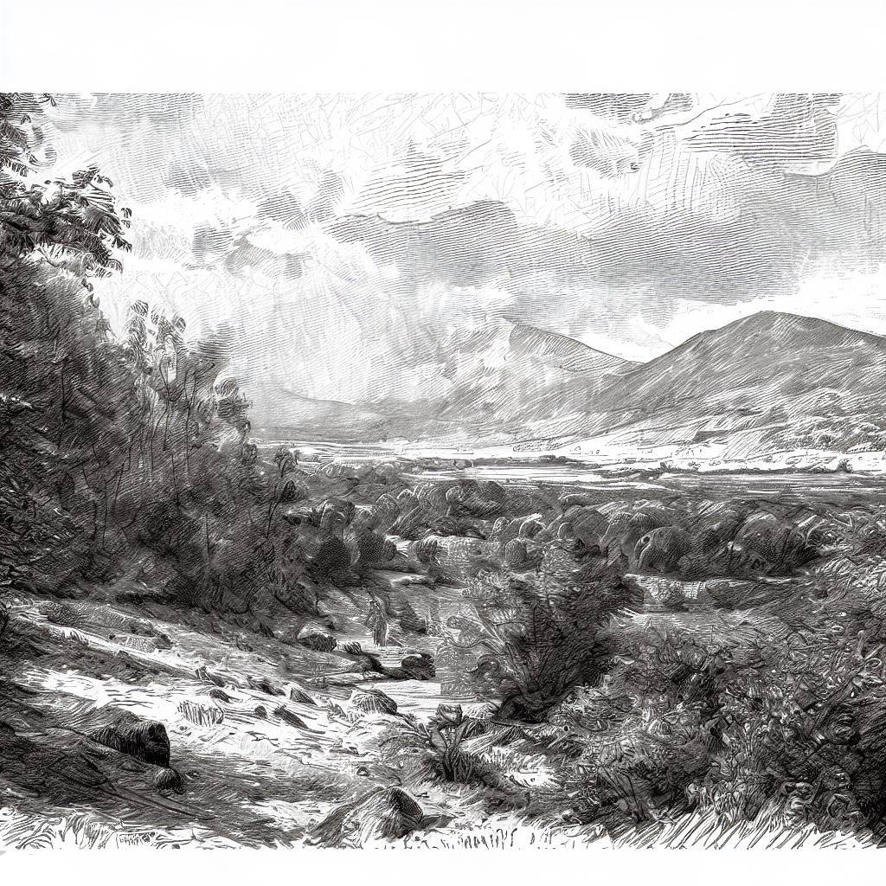

Моето портфолиото
Автор:Николай Генадиев
През целия си живот винаги съм имал страст към творчеството и себеизразяването. Поради това съм прекарал безброй часове в усъвършенстване на уменията си и изследване на различни форми на изкуство. В този раздел бих искал да споделя някои от най-гордите си постижения, включително моите рисунки, разкази, стихотворения и други творения. На първо място бих искал да покажа някои от моите рисунки, които винаги са били източник на радост и вдъхновение за мен. От малък обичам да скицирам и да рисувам, а с течение на времето развих техниката и стила си. Особено се гордея с една от последните си рисунки на красив пейзаж, с която участвах в местен конкурс за изкуство. Въпреки че не спечелих, бях развълнуван от възможността да споделя работата си с други хора и да получа ценна обратна връзка. В допълнение към рисуването съм написал и няколко истории и стихотворения, които са близки и скъпи на сърцето ми. Едно от най-гордите ми постижения в тази област е кратък разказ, който написах за конкурс за писане миналата година. Разказът ми, който изследваше силата на любовта и устойчивостта пред лицето на несгодите, беше избран за финалист. Накрая бих искал да споделя някои от предметите, които съм изработил през годините, включително бижута, керамика и проекти за обработка на дърво. Като цяло съм изключително горд с творческите си постижения и съм благодарen за възможностите, които съм имал да споделям работата си с другите. Независимо дали рисувам, пиша и винаги се стремя да дам най-доброто от себе си в изпълнението на задачата и да създам нещо, което е едновременно красиво и значимо.
